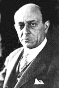

1994-11-11
Here is my favorite story from John Cage.
During a Counterpoint class at U.C.L.A, Schoenberg sent everybody to the blackboard. We were to solve a particular problem he had given and to turn around when finished so that he could check on the correctness of the solution. I did as directed. He said, "That's good. Now find another solution." I did. He said, "Another." Again I found one. Again he said, "Another." And so on. Finally, I said, "There are no more solutions." He said, "What is the principle underlying all of the solutions?"
(This is from Silence, MIT Press, Cambridge MA, 1966. Wonderful book. Good mushroom stories too.)
We have to do more than just solve problems. Knowing that we have found all the possible solutions means we are enlightened about the problem. But Schoenberg wanted even more: he wanted an explicit statement of the principle of enumeration.

Copyright (c) 1995 by Tom Van Vleck